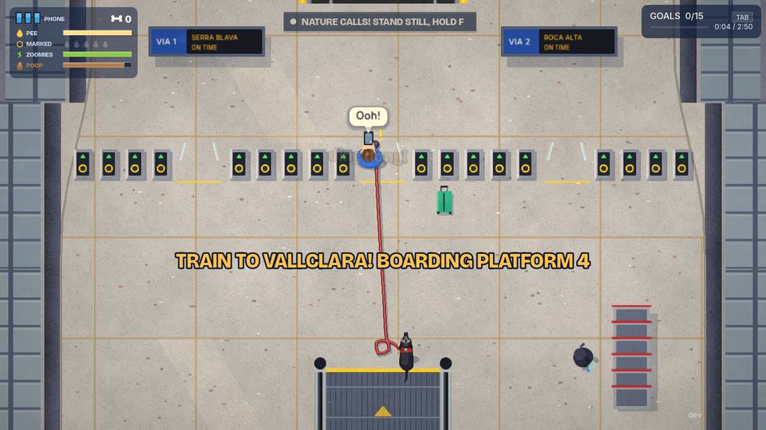
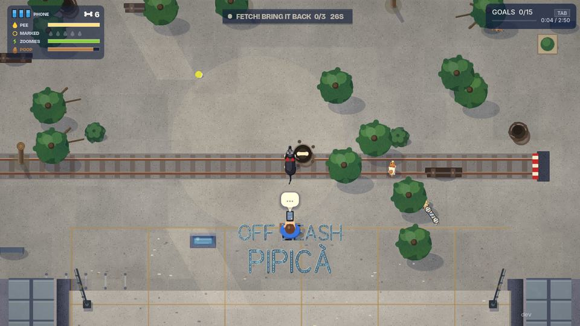

Rush hour at the train station
Main-line concourse underfoot: gleaming station paving, brass tactile guide strips, ticket turnstiles, luggage trolleys and long moving walkways carrying hurried travelers from wall to wall while the clock ticks down.

